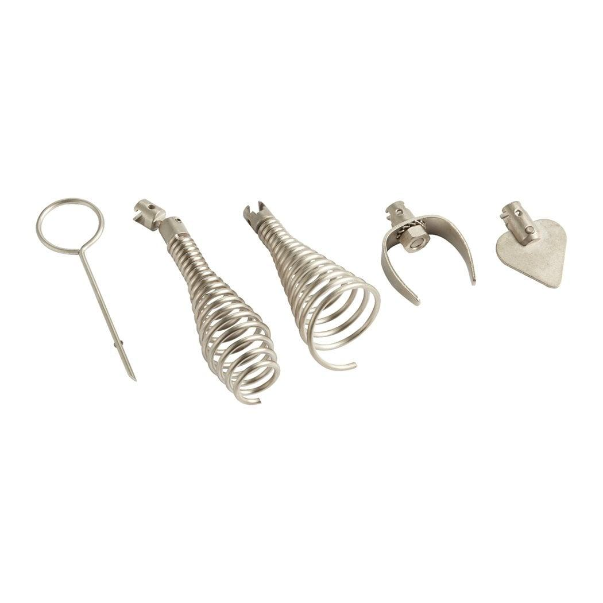

48532790

| Drain capacity [mm] | 40 - 110 |
| Fits drain cleaners | M18 FDCPF,M18 FFSDC |
| Fits drain cleaners M18 FDCPF8, M18 FDCPF10 | ✔ |
| Fits drain cleaners M18 FFSDC16, M18 FFSDC13, M18 FFSDC10 | ✔ |
| Head type | Funnel retriever, drop head, 36 mm spade bit, 40 mm grease cutter and pin-key |
| Pack quantity | 5 |
| Spiral diameter (mm) | 10, 13, 16 |
| Suitable | With all Milwaukee coupling end cables. |